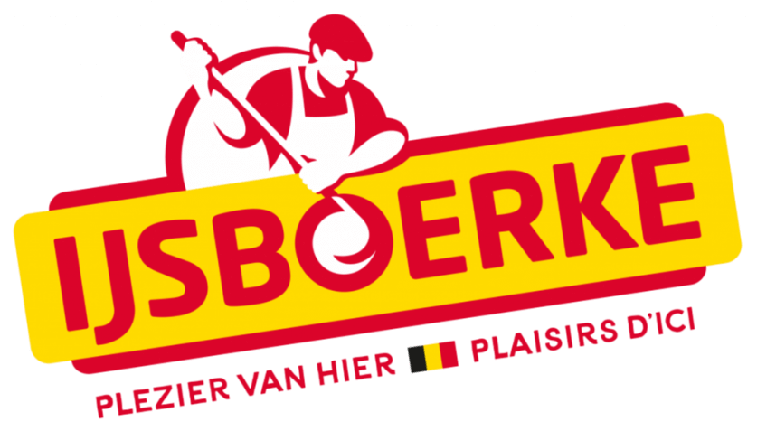
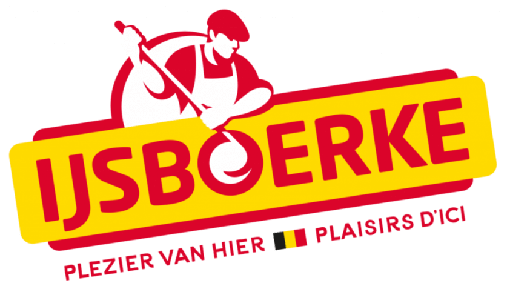

Ervaringen:
Vakantiewerk:
Ik heb de volgende jobs uitgeoefend als vakantiewerk, sommige voor meerdere zomers (zie CV voor exacte datums):
- IJsboerke: Orderpicker / logistiek medewerker in het diepvriesmagazijn.
- Signature Foods: Logistiek medewerker.
- Cartamundi: Afwerker.
- Dansclub Beerse: Vrijwilliger, barbediening.
Stage in de logistieke sector:
Kringwinkel De Cirkel (Brecht)
Tijdens mijn stage als dispatcher wegvervoer heb ik 70 dagen praktijkervaring opgedaan. Deze periode leerde me veel over logisch redeneren en het toepassen van theoretische kennis in de praktijk. Ik heb mezelf tijdens deze stage op nieuwe manieren leren kennen en waardevolle vaardigheden ontwikkeld die nuttig zijn in de logistieke sector.
Stage in de grafische sector:
Ik heb een korte stage gedaan bij Koninklijke Drukker Em. De Jong & Smurfit Kappa. Deze waren zeer oppervlakkige stages, want ze hebben beide maar 2 weken geduurd. Dus niet genoeg om echt het vakjargon te leren, maar ze hebben me wel een beetje werkervaring gegeven over hoe het werken in de grafische sector eraan toe gaat.

 
